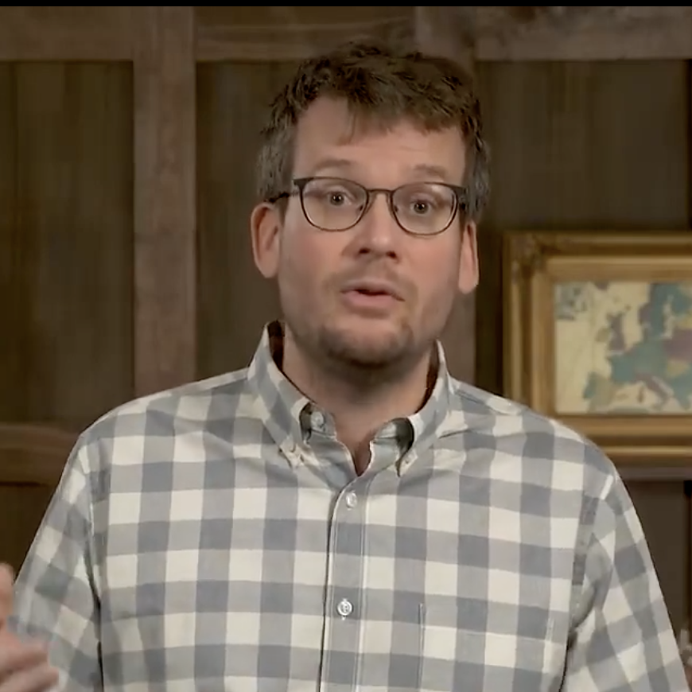

American author and YouTube content creator. He won the 2006 Printz Award for his debut novel, Looking for Alaska,and his fourth solo novel, The Fault in Our Stars, debuted at number one on The New York Times Best Seller list in January 2012.The 2014 film adaptation opened at number one at the box office. In 2014, Green was included in Time magazine's list of The 100 Most Influential People in the World.Another film based on a Green novel, Paper Towns, was released on July 24, 2015. Aside from being a novelist, Green is also well known for his YouTube ventures. In 2007, he launched the Vlogbrothers channel with his brother, Hank Green. Since then, John and Hank have launched events such as Project for Awesome and VidCon and created a total of 11 online series, including Crash Course, an educational channel teaching literature, history, science, and other topics.